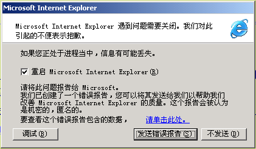

September 04, 2003
我有点怒了
 为了防止“冲击波”，我安装了win2k的sp4，结果就是IE变得异常乖戾起来，动不动就来个重启动，我真的有点怒了。
为了防止“冲击波”，我安装了win2k的sp4，结果就是IE变得异常乖戾起来，动不动就来个重启动，我真的有点怒了。

我向来瞧不起吃肉还要骂娘的人，所以IE或Windows出了问题，一般都要先找找自己是不是犯了什么错误，尽量改动一下自己的页面或什么来满足IE和Windows的要求，毕竟我大部分工作是借助windows和IE完成的。直到前几天，我还是忍疼修改blog的按月归档和分类归档，以求IE不要重启。
可是，自打安装了sp4以后，IE自动重启似乎成了必须，而且有着几乎和呼吸一样的频率。即使以前能成功打开的一些页面，现在也会出问题了。每一次点击链接，心里都悬着，时间久了，心理阴影都快出现了。
FT！
换了换了，用Mozilla了。
Comments
我也用过这个。
不过我还是觉得opero好用。
你试试就知道。
有可能是我的IE有问题。我的IE升级到6以后，问题很多，很不稳定，又不能再降到5.0，很郁闷。
现在用FireBird才几天，感觉很不错，正在学着做一些配置，如右键菜单之类的东东，不知Owen有什么好的主意？
Posted by: Hilton at September 8, 2003 05:04 PM是不是你的IE有问题！firebird用习惯了比IE方便得多。资源占用也少。
Posted by: owen at September 8, 2003 04:02 PMHoohoo,Firebird比Mozilla还快。
谢谢Keke的推荐！
I am trying now.:)
Posted by: hilton at September 4, 2003 02:39 PMwhy not try firebird?
Posted by: keke at September 4, 2003 02:25 PMPost a comment